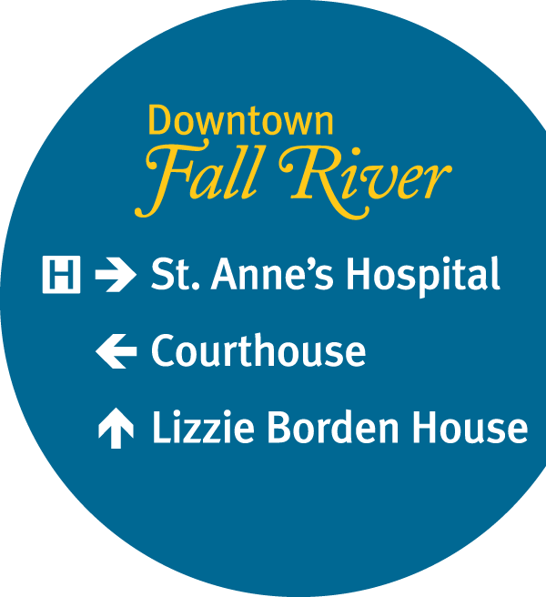
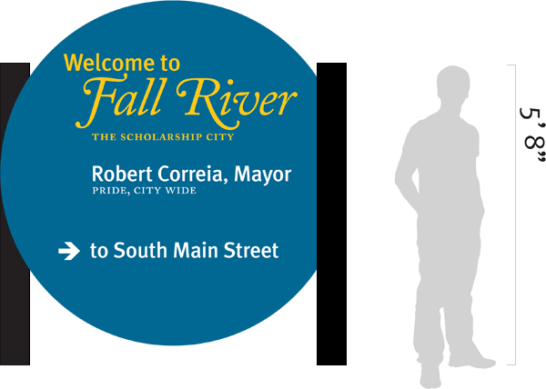

This project was an independent study conducted for the City of Fall River. Myself, Ashleigh Cenedella and Eve Tempaugh worked under the guidance of Professor David Chapman to design a new signage and wayfinding system for the city, centered around the downtown district. Right now the city is going through the process of revitalizing itself, and the downtown area's efforts are being centered around the construction of a new courthouse. This sign system's main purpose was to guide employees and visitors to the new courthouse and other popular downtown attractions.
This is a close-up of the main sign setup. Each sign has three locations at most, with the top location being the closest to that particular sign. We chose the typeface Meta after conducting legibility studies in the downtown area. We also started with many different arrow designs before settling on these as the most visible from a distance. The choice of Caslon for the words "Fall River" was meant to reflect the city's many historic sites. The round shape was chosen so the signs would stand out from other signs in the area, and the slight cutoff on the right was meant to allow the sign to sit closer to the lightpoles that we chose as the best placement option.
This gateway sign was meant to sit at the off ramp from the highway and to serve as an introduction to the entire system. Users would be "trained" through this experience that the round blue signs throughout the city were official designations of place and direction. Unfortunately, the entire system was implemented incorrectly. Despite the best efforts of the project team, the vendor for the signs chose to build them the way they saw fit instead of following our careful instructions, and then turned over the task of placement to the city. As a result, the implemented system barely resembles the one we designed.